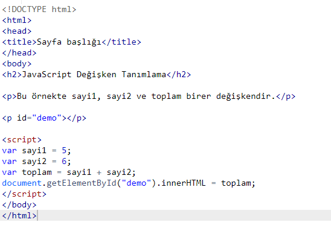
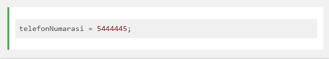
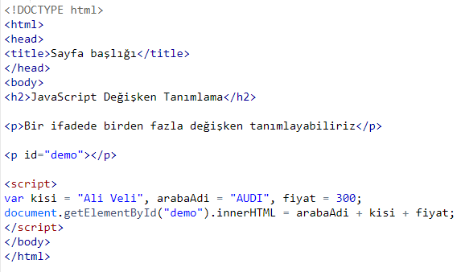
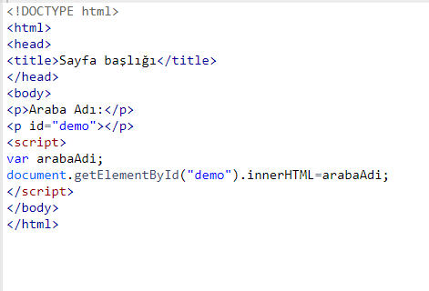
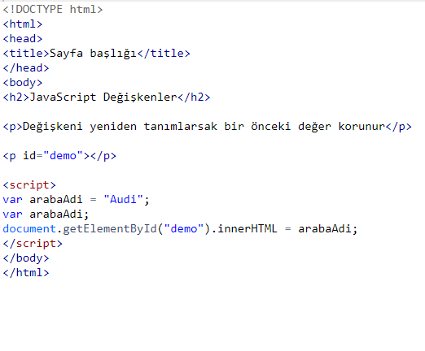
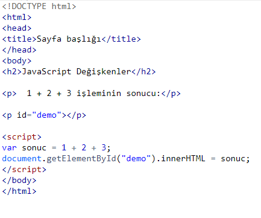
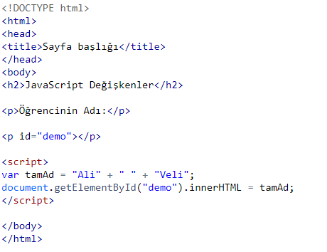

DEĞİŞKENLER
Herhangi bir programlama dilinde değişkenler verileri saklamak için kullanılan yapılardır. Veriler bilgisayarın belleğinde saklanır.
Değişken (Variable) nedir?
Programlama dillerinde sıkça verileri bellek yani ramde saklamamız gerekir. Ram işlem yapmak için son derece hızlı bir donanımdır.
Bilgisayar belleğini içinde milyonlarca çekmece bulunan bir dolaba benzetebilirsiniz.
Bellek, filmlerde gördüğünüz bankalarda üzerinde numaralar olan saklama kasaları gibidir.
Basitçe, bellek içindeki bir alanın adlandırılmasına ve sizin için ayrılmasına değişken tanımlamak denir. Kasaya verdiğiniz, yani bellek alanına verdiğiniz ad ise değişken olarak adlandırılır. Kasa içinde sakladığınız değerse veri olarak adlandırılır.
Aşağıdaki örnekte sayi1, sayi2 ve toplam birer değişkendir.
Bu örnekte sayi1, sayi2 ve toplam birer değişkendir.
Ekran çıktısı
11
-> sayi1 adında ve içinde 10 değeri saklayan bir değişken oluşturuldu.
-> sayi2 adında ve içinde 5 değeri saklayan bir değişken oluşturuldu.
toplam adındaki değişken ise sayi1 ile sayi2 değişkenlerinin toplamlarını değer olarak aldı.
JavaScript Değişken Tanımlarken Dikkat Edilmesi Gerekenler
JavaScript programlama dilinde değişken tanımlarken değişken adı benzersiz olmalıdır.
Yani örneğin bir metod içinde toplam adında bir değişken tanımladıysanız bu adı ikinci kez kullanamazsınız.
Bu benzersiz ad tanımlayıcı (identifier) olarak adlandırılır.
Tanımlayıcı yani değişken adı a,b,c gibi kısa bir ad olabilir veya daha faza bilgi veren toplamTutar, urunAdi gibi olabilir.
Değişken adlandırırken her zaman açıklayıcı adlar vermeye dikkat edin.
JavaScript değişken tanımlarken şu kurallara dikkat edilmelidir:
~Değişken adladırırken sorun yaşamamak adına Türkçe karakter kullanmayın: İıçşğü gibi. Yani ürünAdı değil, urunAdi şeklinde tanımlama.
~Değişken adı harf, rakam, alt çizgi, dolar işareti barındırabilir.
~Değişken adları sayı ile başlayamaz. sayi1 geçerli, 1sayi geçersiz adlandırmadır.
~Değişken adları $ ve _ ile de başlayabilir. $fiyat veya _fiyat gibi.
~Değişken isimleri büyük-küçük harf duyarlıdır. Yani fiyat ve Fiyat aynı şey değildir.
~Rezerve edilmiş anahtar kelimeler değişken adı olarak kullanılamaz: var, function, switch gibi
JavaScript Atama Operatörü
JavaScript programlama dilinde eşittir işareti (=) atama işaretidir.
Örneğina = a + 5 ; ifadesi, a değişkeninin değerine 5 ekle ve tekrardan toplam değeri a değişkenine ata anlamına gelir.
b = 10; dediğimizde b değişkenine 10 değerini atamış oluruz.
JavaScript değişken atamalarında metin değerler tırnak içinde yazılmalıdır:
site = 'JavaScript Öğreniyorum'; gibi
ÖRNEK

Ekran çıktısı
Sayı: 10
Site:
uzmanim akademi
JavaScript Değişken Tanımlama
var anahtar kelimesi ile bir değişken tanımlanır:var telefonNumarasi;
Değişken oluşturulduktan sonra bu değişkenin herhangi bir değeri yoktur, değer atanmamıştır.
Yani bellekte yerinizi ayırttınız ama içine herhangi bir veri yerleştirmediniz.
Değişkene değer atamak için eşittir işaretini kullanırız: 
Ekran çıktısı
Değişken tanımlama ve değer atama işlemini aynı satırda yapmak da mümkündür:
Yukarıda adıtelefonNumarasi olan bir değişken tanımladık ve buna değer atadık.
Not: Değişkenleri kodun en başında tanımlamak iyi bir programlama davranışıdır.
Bir İfadede Birden Fazla Değişken Tanımlamak
JavaScript değişkenlerini farklı ifadeler ile tanımlayabildiğimiz gibi, aynı ifade içinde birden fazla değişken tanımlamak da mümkündür.Değişkenleri virgül ile ayırarak yan yana tanımlayabiliriz:

Ekran çıktısı
JavaScript Değişken Tanımlama
Bir ifadede birden fazla değişken tanımlayabiliriz
AUDIAli Veli300
undefined Nedir?
Programlamada değişkenler genelde bir değerle birlikte tanımlanır. Ya da değişken tanımlandıktan sonra değer atanır.Değer bazen hemen atanır bazen de bir işlemin, hesaplamanın sonunda atanır.
Tanımlanan bir değişken değer atanmadıysa undefined (belirsiz, tanımlanmamış) değerine sahip olur.
undefined ifadesi bazen hatalarda karşınıza çıkar.
Aşağıdaki örnekte arabaAdi değişkeni tanımlanıyor fakat bu değişkene değer atanmıyor.
Peki tanımlanan değişkenin değerini ekrana yazdırmak istersek ne görürüz?
Cevabı kendiniz deneyip görebilirsiniz:

Ekran çıktısı
Araba Adı:
undefined
JavaScript Değişkeni İki Defa Tanımlarsak Ne Olur?
Bir değişkeni iki defa tanımlarsanız, değişken değerini kaybetmez. Aşağıdaki örnekte arabaAdi değişkeni hâlâ "Audi" değerine sahiptir. Ekran çıktısı
JavaScript Değişkenler
Değişkeni yeniden tanımlarsak bir önceki değer korunurAudi
JavaScript Matematik İşlemleri
JavaScript değişkenleri ile +,- gibi operatörleri kullanıp işlem yapabilirsiniz.
Ekran çıktısı
JavaScript Değişkenler
1 + 2 + 3 işleminin sonucu:6
Ayrıca + operatörü ile metin ifadeleride işleyelebilirsiniz. Fakat bu durumda string ifadeler yan yana gelecektir:

Ekran çıktısı
JavaScript Değişkenler
Öğrencinin Adı:Ali Veli